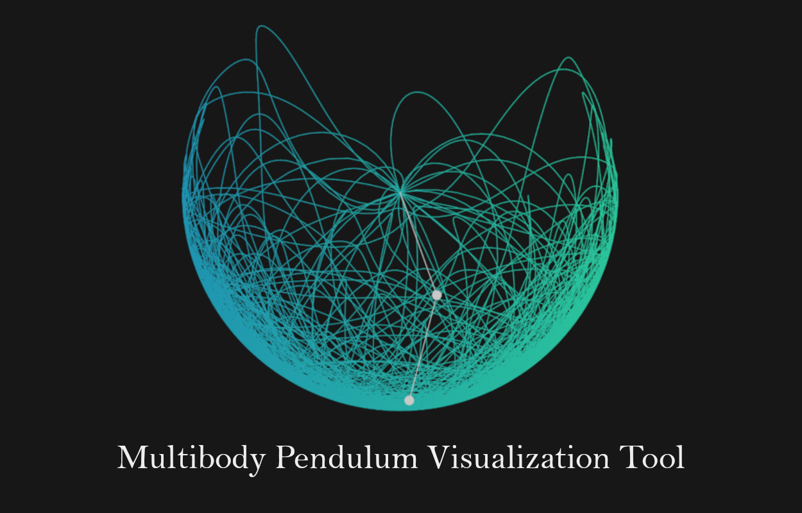

What is this project
In the context of this year's Physics Hackathon, we decided to work on a visualization tool for pendulum motion. As we researched the topic, we realized most simulator focused on single and double pendulums, but we wondered what would happen as you increase the amount of bobs in the system? How chaotic could this get?

How we built it
As we wanted this tool to be interactive, we thought it would be a great idea to make this in JavaScrypt. This way, anyone could try it and have its own spin on it. We used the p5.js framework to draw the systems and hosted them on HTML5 pages. The tricky part was getting the equations of motion right. For a simple pendulum, classical mechanics equations are sufficient, however we had to turn to Lagrangian mechanics and many papers to figure out the motion of multibody pendulums. Note, to show the chaos induced by multibody pendulums, we plotted the position of the bottom bob over time.
What's next
As we approached an increasing amount of pendulum's bobs, we realized a generalization formula might be necessary to qualify the equations of motion (EOM) of said bobs. Each mass added to the system significantly complexifies the EOMs and hence make the code tedious to write, and read. Once a generalization formula is found, it will be easy to visualize how the system behaves as the number of bobs gets bigger. An other option could be to use an other language / framework to calculate said EOMs (for example Python and Sympy or Matlab). As we introduced in our double pendulum system, phase-space diagrams could also be an interesting approach to this topic as it touches some concepts of chaos theory.